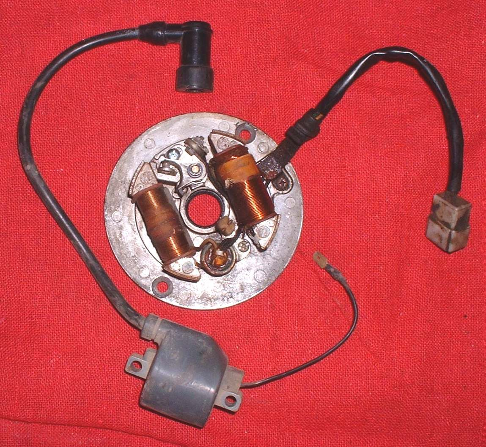

The ignition coil is a small sealed block, usually under the tank or seat, with a thick high-tension (HT) lead running to the plug cap on the spark plug. Two thin wires feed it from the CDI or ECU. The plug cap often contains a resistor to cut radio noise.
What it does
The coil is a transformer. A low voltage pulse in its primary winding becomes many thousands of volts in the secondary winding, enough to jump the plug gap under compression. Heat and vibration crack the windings inside, so a coil can work cold and fail hot. Water and dirt let the spark track down the outside of the lead or cap instead of reaching the plug.
Signs it is worn or failing
- No spark or a weak, orange spark.
- Ignition cuts out when hot and returns when cool.
- Misfires or dies in heavy rain or after washing.
- Misfires at high revs or under load.
- Cracked lead, burnt marks on the cap or a loose cap.
When to replace it
When it gives no spark or a weak spark with good supply and good triggering, or the lead or cap is cracked or tracking. A coil that passes a resistance test can still fail under load, so test spark too. Often only the cap needs replacing.
What to match when buying
- Match make, model and year, or the coil part number. CDI and transistor (ECU) ignitions use different coils.
- Match the plug cap: straight or angled, with or without resistor, and the right fit on the plug top.
- Cheap coils may give a weak spark or fail when hot. Buy from a dealer or known ignition maker.
- The cap and lead are sold separately on many bikes: Spark plug cap and HT lead. Points systems also use a condenser and contact points.
Fitting notes
- Home job: Test the ignition coil and plug cap, Check for a spark safely.
- High voltage can give a painful shock and make you fall: hold leads with insulated tools, use an enclosed spark tester, keep fuel away.
- Turn the key off before unplugging. Clean the earth point and fit the cap fully. Use the coil torque in your bike's manual; the K-Light manual gives two different values.
Reference (K-Light 125)
| Item | Value | PDF page |
|---|---|---|
| Coil supply | 9 to 14 V | 265 |
| Coil output | 25 to 35 kV | 265 |